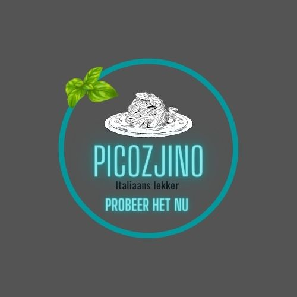

Lees nu over ons
Bekijk nu ons familie geheim voor dit restaurant
Hoewel pizza en pasta niet uit de Nederlandse keuken zijn weg te denken, is de geschiedenis van de Italiaanse keuken voor veel Nederlanders onbekend terrein. Bovendien is de Italiaanse keuken één van de oudste keukens ter wereld. Ben je een fan van Italiaans eten? Dan is het eigenlijk vreemd als je niet weet waar de oorsprong van de heerlijke maaltijden ligt. Is dat bij jou het geval? Lees dan meer over ons restaurant in dit artikel.
De Italiaanse keuken is gebaseerd op de Romeinse en Griekse kooktradities. Later vielen de Germanen Italie binnen, waardoor smaken uit de Germaanse keuken deels in de Italiaanse terecht kwamen. Maar de Germanen waren niet de enige de voor veranderingen zorgden. Ook Marco Polo naam specerijen mee, die hij tijdens zijn reizen naar het verre oosten was tegengekomen.
Tomaten en appels vonden hun weg naar de Italiaanse keuken toen ze vanuit Amerika in Europa geintroduceerd werden. Bovendien bleek dat deze producten uitstekend konden groeien in het Italiaanse klimaat, zodoende dat tomaat steeds vaker in gerechten werd verwerkt.
Een ander product die veel invloed op de Italiaanse keuken heeft gehad zijn olijven, waarmee onder andere de alom bekende olijfolie wordt gemaakt. Al met al is de Italiaanse keuken een samenstelling van producten uit diverse landen, waarmee heerlijke gerechten worden gemaakt, zoals lasagne en pizza.
Wanneer je in een Italiaans restaurant gaat eten, worden er benamingen gebruikt voor de verschillende gangen:
Aperitivo
Dit is een klein alcoholisch drankje dat je krijgt aangeboden voorafgaand aan de eerste gang. Vergelijk het met Ouzo dat je in Griekse restaurants vaak aangeboden krijgt.
Antipasto
Dit is een klein gerechtje dat je krijgt vooraf aan een 'echte' maaltijd. Er zijn koude gerechten - bijvoorbeeld ham, olijven en zongedroogde tomaten - en warme varianten, zoals gegrilde groenten.
Primo
Dit is de eerste warme 'echte' maaltijd, bijvoorbeeld een kleine hoeveelheid pasta of risotto.
Secondo
Dit is de hoofdmaaltijd, meestal vis of vlees.
Contorno
Dit is het bijgerecht dat bij de hoofdmaaltijd wordt geserveerd, bijvoorbeeld een salade.
Formaggio e frutta
Dit betekent letterlijk fruit en kaas, precies wat je geserveerd krijgt.
Dolce
Als laatste gerecht wordt vaak iets zoets geserveerd. Naast het bekende tiramisu toetje, kan het ook een stukje taart zijn.
Nadat je het laatste gerecht geserveerd krijgt, krijg je meestal nog koffie en/of thee en eventueel een glaasje sterke drank, zoals likeur.
Naast pizza's en pasta's is er nog een aantal andere Italiaanse gerechten die populair zijn, maar lang niet iedere Nederlander kent. Denk bijvoorbeeld aan Gnocchi. Hoewel dit officieel ook een pastasoort is, zien veel mensen het niet als pasta. Het is een soort deeg dat vaak met een pesto of tomatensaus wordt geserveerd. Het deeg heeft de vorm van kleine aardappeltjes. De smaak is even wennen, maar met een goede saus is het smullen geblazen!
Verder mogen we de risotto's natuurlijk niet vergeten! Risotto is een plakkerige rijstsoort die vaak met champignons of zeevruchten wordt opgediend. Erg lekker en het uitproberen en varieren absoluut waard!
Nu je weet waar de Italiaanse keuken zijn oorsprong vindt, welke gangen er zijn en welke gerechten niet mogen ontbreken op een Italiaanse menukaart, kunnen we ons voorstellen dat je trek hebt gekregen in Italiaans eten!
Je kunt natuurlijk wat recepten online opzoeken, maar hoe leuk is het om samen met een groep vrienden of familie een lekker maaltje van Picozjino te proeven? Gegarandeerd plezier en bovendien ook smullen.